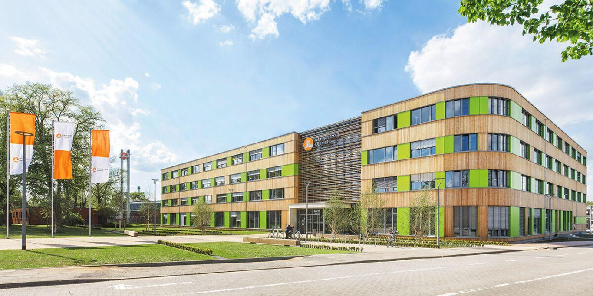

Stromnetz
4.625 km
Stadtwerke Lübeck Gruppe
Lernen Sie unser Ausbildungsunternehmen kennen und erfahren Sie, was hinter der Stadtwerke Lübeck Gruppe steckt.
DAS IST UNSER WERK
Die Stadtwerke Lübeck Gruppe übernimmt wichtige Aufgaben für Menschen, Unternehmen und Kommunen in Lübeck und der Region.
Die Unternehmensgruppe verbindet dabei Energie, Wasser, Wärme, Mobilität und digitale Infrastruktur.

ZAHLEN & FAKTEN
Unternehmensangaben · Stand 2026
NETZDETAILS
Die verschiedenen Netze bilden die technische Grundlage für eine zuverlässige Versorgung in der Region.
4.625 km
1.266 km
746 km
140 km
UNSER PROFIL
Die Stadtwerke Lübeck verbinden Versorgung, Infrastruktur und zukunftsorientierte Entwicklungen unter einem gemeinsamen Dach.